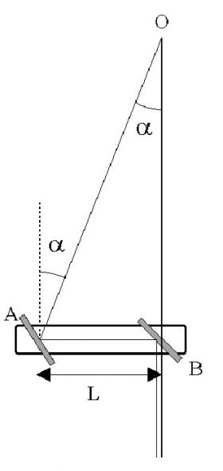
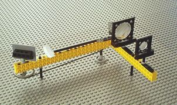

|
Telemetro
 Fig.1 SESTANTE DI TROUGHTON & SIMMS E' possibile misurare la distanza che ci separa da un oggetto anche se non possiamo raggiungerlo. Basta servirsi delle leggi della riflessione e di un po' di geometria. Se si guarda un oggetto distante alcuni metri, come un palo od un albero, contemporaneamente da due punti diversi (A e B), conoscendo la distanza (L) tra i due punti e l'angolo tra le due direzioni di osservazione (???è possibile calcolare quanto è lontano l'oggetto. In figura è illustrata la geometria del problema. Il lato AB è accessibile all'osservatore e la sua lunghezza L può essere facilmente misurata. Inoltre AB è perpendicolare al lato OB di cui si vuole misurare la lunghezza. Se si determina l'angolo ? il triangolo AOB risulta definito e tutti gli altri elementi del triangolo possono essere calcolati: • con semplici formule di trigonometria (d=L/tan ?? oppure • servendosi di un disegno fatto in scala. Per osservare contemporaneamente l'oggetto O da due direzioni diverse ci si serve di due specchi: il primo specchio è fisso (in B) e devia di 90° la metà inferiore del campo di vista in direzione del secondo specchio (in A). Quest'ultimo è posto ad una distanza fissa ma può girare liberamente intorno a un asse verticale. L'osservatore vede direttamente l'oggetto al di sopra del primo specchio e allo stesso tempo, nella parte inferiore, vede ciò che sta puntando per mezzo delle due riflessioni sugli specchi. Si deve quindi ruotare con cura lo specchio mobile fino a fare comparire l'oggetto di cui si vuole misurare la distanza e fare corrispondere esattamente le due parti dell'immagine come illustrato nella figura a lato. In queste condizioni un indice collegato allo specchio mobile consente la lettura dell'angolo ??da cui si ricaverà la distanza. ?Di solito sulla scala del telemetro sono riportate direttamente le distanze. Quando l'indice è sulla posizione di riferimento (?=0) lo specchio mobile e quello fisso devono essere paralleli. Prima di procedere alla misura si può verificare questa condizione osservando un oggetto molto lontano. Riferimenti:  Scarica le istruzioni di montaggio in formato pdf: scarica file
|
||||||||||||||||||||||||||||||||||||||||||||||||||||||||||||||||||||||||||||||||||||||
|
Scienza Ludica è un progetto ISC - Istituto Sistemi Complessi del CNR |